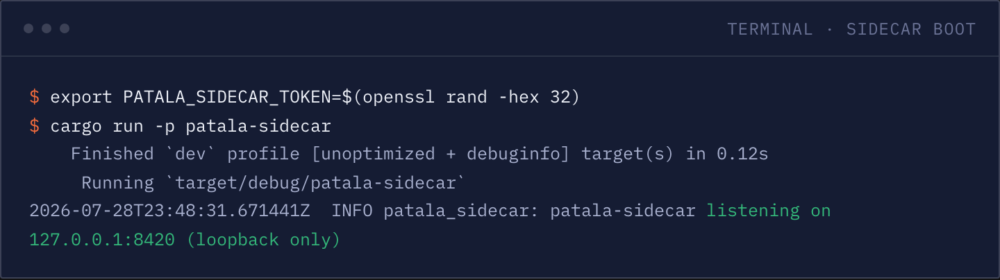
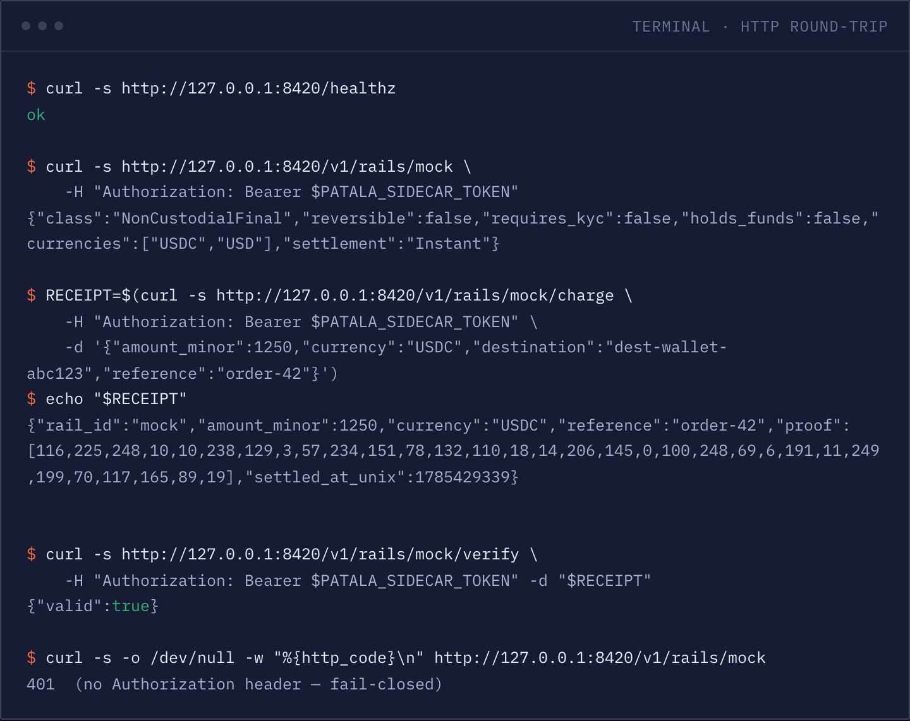
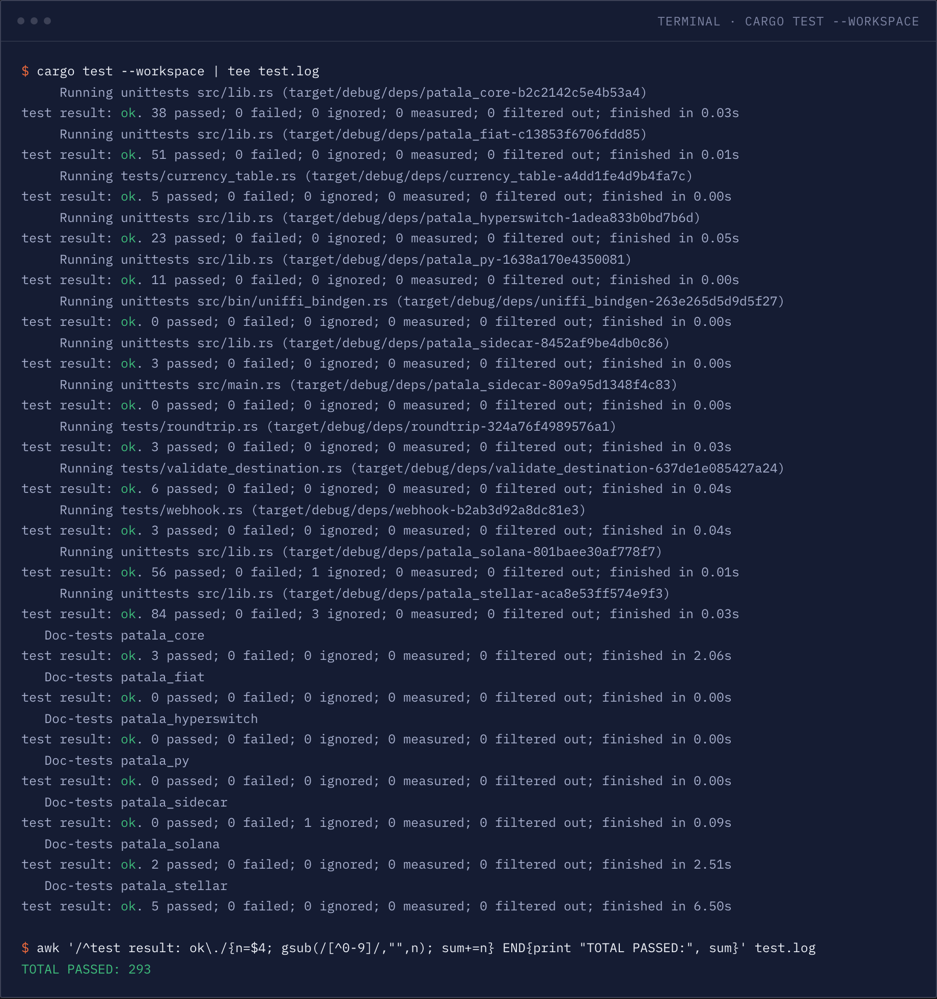
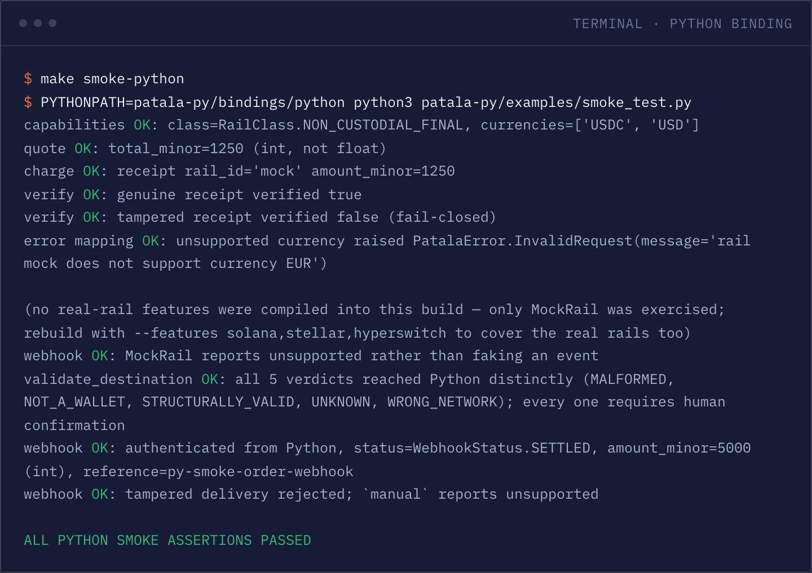
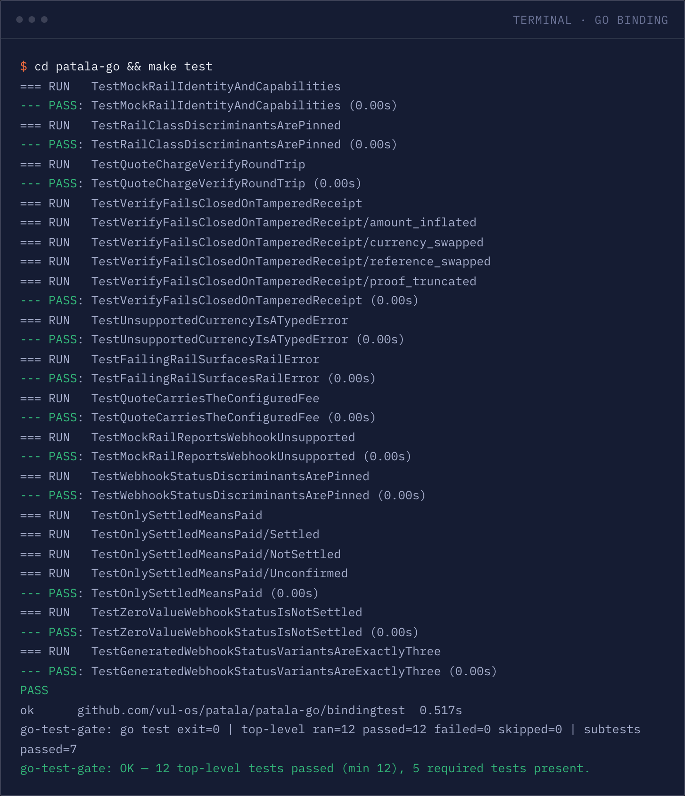

patala is a sovereign, centreless payment-rail substrate — one interface to move money, fiat or crypto, that any product can vendor and self-host. The platform holds no funds, takes no cut, and no one owns the network. Patala is Sesotho/Setswana for "to pay."
293 offline tests pass in the default build and 572 more with every processor feature compiled in. Beyond that, exactly two runs have ever touched a live network — both patala-stellar, both Stellar testnet, both 2026-07-30.
No mainnet. No live merchant account. Read the evidence ladder before you point this at real money.
Nothing pools at the joint. patala quotes, charges and verifies every rail above and is never in the line value actually moves on — there is no balance to hold, so the tick where the interface meets each rail is drawn open, not filled.
Three claims a payment platform normally asks you to take on trust. Here each one is a consequence of the architecture — there is no code path that could break them, because the thing that would break them was never built.
Nothing below is a policy, a term of service or a promise. Each is a thing that was never built, and so cannot be turned on later without you seeing the commit.
No balance table, no payout queue, no ledger of its own. Value moves over the rail directly; patala is the interface, never the account. There is nothing to freeze and nothing to run off with.
You pay the rail its own cost — a processor's fee, a chain's gas — and nothing extra to a middle patala doesn't occupy. No token, no protocol tax, nothing to meter.
No registry to join, no operator to depend on, no network to be admitted to. Vendor the crate into your own product and self-host it — the substrate is the code, not a company.
patala isn't a product you sign into — it's a library and a sidecar. Everything it ships is a crate you vendor, a trait you implement, or a process you run next to your own app.
There is no admin panel to secure, no session to hijack, no dashboard that becomes the thing an attacker — or an outage — actually targets. A payment substrate with no web surface has no login page to phish, no cookie to steal, and nothing to keep available at 3am besides the process you already run.
The whole attack surface is the trait boundary, and that boundary is reviewable in an afternoon.
patala-core plus whichever rail feature you enable$ ls
patala-core/ patala-hyperswitch/ patala-sidecar/
patala-fiat/ patala-py/ patala-solana/
patala-go/ patala-stellar/
$ # no server to sign into, no dashboard to click through —
$ # a library and a sidecar, and nothing else in this tree.Fiat is custodial and reversible — chargebacks, KYC, T+2 settlement. Crypto is non-custodial and final — wallet-to-wallet, no reversal. patala never blurs which one a consumer is getting: the settlement class lives in the type, not in a flag, and it is the one thing this page gives its own colour.
| Rail | Settlement class | What it is |
|---|---|---|
| Mock patala-core |
None | The offline default. Deterministic, no network, no external crypto dependency — what keeps the default build and CI running with no chain and no processor reachable. |
| Solana patala-solana |
Final | SPL-USDC on Solana. Ed25519 — the app's identity key doubles as the wallet key, no mapping table. Ported from an earlier in-house implementation (~1,760 lines). |
| Stellar patala-stellar |
Final | Native USDC (Stellar Asset), Ed25519 (StrKey), built on SDF's own stellar-xdr/stellar-strkey. The cheapest measured fees of the two crypto rails, and the only rail that has ever touched a live network — see § 04. |
| Hyperswitch patala-hyperswitch |
Reversible | A thin HTTP client to a self-hosted Hyperswitch instance, presenting its whole fiat processor set — Stripe, Paystack, Xendit and 100+ connectors — as one rail. Adopted, not rebuilt. |
| Direct fiat adapters patala-fiat |
Reversible | Twenty processors talked to directly, one Cargo feature each, plus the ISO-4217 minor-unit currency table and an always-on offline manual rail.
Adyen · BTCPay · Checkout.com · Coinbase Commerce · Flutterwave · iyzico · LNbits · Mercado Pago · Midtrans · Mollie · OpenNode · PayFast · PayPal · Paystack · PayU · Razorpay · Square · Stripe · Xendit · Yoco
|
"Tested" is not one thing. Below, every crate sits on the highest rung it has genuinely reached — and the last rung is drawn empty because nothing in this repo has ever run against mainnet. Nothing here is coloured green for a thing it has not done.
Two gated passes in make check: the default workspace build, then everything again with every processor feature on.
No chain, no processor, no network reachable. This is where the mock rail is meant to stop — that is the point of it, not a shortfall.
Real processes, not assertions about them: the sidecar booted and answered HTTP, both bindings ran under a real interpreter and real cgo. CI-enforced. See § 06.
The highest rung anything here has reached. One single-leg payment read back from real Horizon, and one 3-instalment plan whose second instalment was genuinely rejected, then accepted.
No rail. Not Stellar's own mainnet path, not Solana, not one fiat processor, not one live merchant account. This rung is empty and the page will say so until it isn't.
| Crate | Settlement class | Tests | Highest rung reached |
|---|---|---|---|
| patala-core | None | 38 + 3 doctests | OFFLINE BY DESIGN |
| patala-fiat | Reversible | 552 (all features) | NOT RUN — NO LIVE MERCHANT ACCOUNT |
| patala-solana | Final | 56 (+1 gated) + 2 doctests | NOT RUN — TESTNET STEP IN README |
| patala-stellar | Final | 84 (+3 gated) + 5 doctests | LIVE TESTNET — TWICE, 2026-07-30 |
| patala-hyperswitch | Reversible | 23 | NOT RUN — NEEDS A LIVE INSTANCE |
| patala-py / patala-go | None | 11 Rust (20 w/ fiat-all) + 19 Go | EXECUTED, CI-ENFORCED |
| patala-sidecar | None | 15 (12 HTTP + 3 unit) | EXECUTED — RAIL REGISTRY IS MOCK-ONLY |
patala-stellar only, both on Stellar testnet, both 2026-07-30 — a single-leg USDC-shaped payment confirmed by StellarRail::verify reading it back from Horizon, and separately a 3-instalment recurring schedule whose second instalment was genuinely rejected by real Horizon when resubmitted too early, then accepted once the pacing floor elapsed. Mainnet is untouched, atomic multi-party splits have never run live, the sidecar's rail registry is still mock-only, and every other rail — including Stellar's own mainnet path — says plainly, in its own README, that it hasn't been run live. Anything specified in PATALA.md but not built is marked as such there. See the full status for the transaction hashes and every crate's caveats.
Write every rail adapter once, in the core, and reach it four different ways — or write each rail again in each language and keep twenty copies in step forever. patala is the first shape.
verify means.PaymentRail trait, so there is exactly one definition of verify to get right.Program against PaymentRail directly. The default build pulls no chain and no processor — opt into a rail with its feature flag.
patala-py wraps the core over UniFFI with synchronous methods — no asyncio loop needed just to call charge().
patala-go, the same UniFFI IDL generated for Go. 19 top-level binding tests, CI-enforced with the pinned uniffi-bindgen-go.
patala-sidecar — quote / charge / verify / webhook as JSON on 127.0.0.1 only, token-gated, fail-closed. Any language, zero FFI.
// The settlement class lives in the type — never flattened to a bool.
pub enum RailClass { CustodialReversible, NonCustodialFinal }
#[async_trait]
pub trait PaymentRail {
fn id(&self) -> &str;
fn capabilities(&self) -> &RailCapabilities;
async fn quote(&self, req: &PayRequest) -> Result<Quote>;
async fn charge(&self, req: &PayRequest) -> Result<Receipt>;
async fn verify(&self, receipt: &Receipt) -> Result<bool>; // fail-closed
async fn verify_webhook(&self, d: &WebhookDelivery) -> Result<WebhookEvent>;
}The seam itself — one trait, six methods. Everything else in this repo is an implementation of it.
from patala_py import PatalaRail, PayRequest, RailClass
rail = PatalaRail.new_mock(
id="mock",
_class=RailClass.NON_CUSTODIAL_FINAL,
currencies=["USDC"],
fee_minor=0,
failing=False,
)
req = PayRequest(
amount_minor=1_250, # int, never a float
currency="USDC",
destination="dest-anything",
reference="order-1",
)
receipt = rail.charge(req)
assert rail.verify(receipt) is True # fail-closed: a tampered receipt verifies FalseThe same charge round trip as the Rust above, over UniFFI — synchronous, no asyncio loop.
import patala "github.com/vul-os/patala/patala-go/bindings/patala"
rail := patala.PatalaRailNewMock(
"mock", patala.RailClassNonCustodialFinal, []string{"USDC"}, 0, false,
)
req := patala.PayRequest{
AmountMinor: 1_250, // uint64, never a float
Currency: "USDC",
Destination: "dest-anything",
Reference: "order-1",
}
receipt := must(rail.Charge(req))
valid := must(rail.Verify(receipt)) // fail-closed: a tampered receipt verifies falseThe same charge round trip again, over cgo — the same generated UniFFI surface.
[dependencies]
# SECURITY.md: patala publishes no artifacts today — vendor by path or git.
patala-core = { git = "https://github.com/vul-os/patala" }
patala-stellar = { git = "https://github.com/vul-os/patala" } # opt in per railVendoring it: nothing is published on crates.io. Depend by path or by git, and opt into rails one feature at a time.
No mockups, no invented JSON. The sidecar actually booted, curl actually hit it, the offline suite actually ran, and the Python and Go bindings actually executed — moments before this page was built.
Reproduce it yourself: scripts/capture-transcripts.sh && node scripts/render-shots.mjs.

cargo run -p patala-sidecar, actually booting.

cargo test --workspace — the same 293 offline tests rung 02 cites, tallied here by a real awk one-liner reading the log, not typed in by hand. Scroll for the full run.
patala-py.
patala is a library, not a service — there is nothing to sign up for and nobody to ask. Read exactly what has been proved, and what hasn't, before you point it at real money.